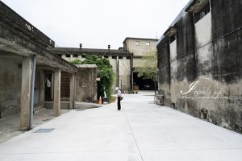
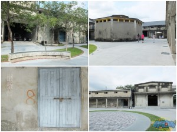
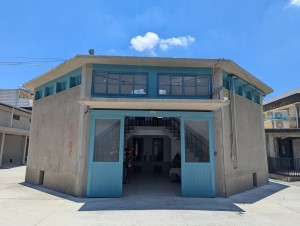
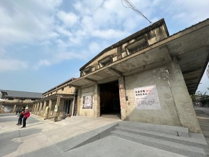
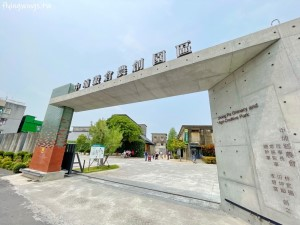
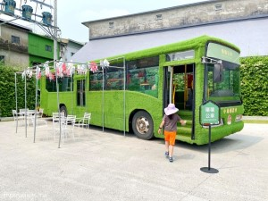

| 舊時風華與沒落 ｜歷史背景與轉型活化｜現代穀堡 |
| 穀堡舊時風華與沒落 |
- 國家糧食中繼站：
嘉義地區（如中埔、鹿草等地）因氣候溫暖，曾是台灣重要的稻米產區。當地的農會穀倉在日治時期至戰後初期，扮演著收集、烘乾、儲存公糧與私糧的關鍵角色。
- 建築與經濟核心：
舊時的大型水泥穀倉是農村繁榮的象徵，挑高的倉體與通風構造，確保了稻穀的品質，支撐起無數農家的生計。
|
 |
 |
| 歷史背景與轉型活化 |
- 建於民國50年代
：這些糧倉群建於民國5、60年代，早期為存放稻穀、提供農民繳交公糧的重要設施。
- 閒置與荒廢
：隨著時代變遷與農業型態轉變，鄰近地區稻作漸減，部分糧倉群因此逐漸閒置。
- 華麗轉身為農創園區
：中埔鄉農會自2021年起啟動活化計畫，將占地約3,300多坪的16座老穀倉保留原始挑高架構與清水模外觀，並融合現代文創，打造成為熱門的休閒園區。
|
 |
 |
| 現代穀堡 |
- 全台唯一穀倉星巴克
：將 40 年歷史的老穀倉老建築重新翻修，內部保留了傳統稻米輸送設備與稻草與水泥相混的牆面，搭配現代連鎖咖啡廳的時尚質感。
- 現代裝置藝術打卡點
：園區內融入現代美術元素，包含紅白相間的巨大「幻彩精靈菇」等 FRP 雕塑藝術装置，在網美清水模牆面與水霧廣場的襯托下非常適合拍照。
- 免門票與親子友善空間
：免門票即可入園，內部設有規畫豐富水果插畫的「童趣館」、復古童玩區，以及擺設阿里山紅皮小火車裝置，非常適合家庭放電。
|
 |
 |